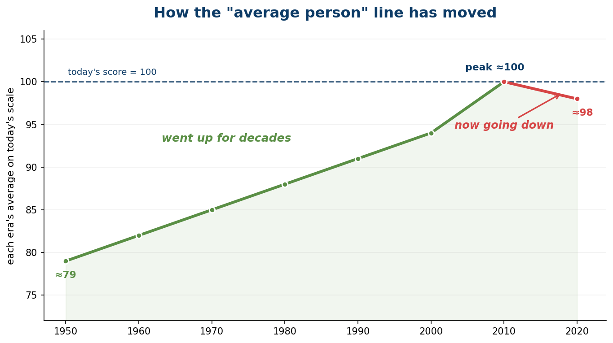
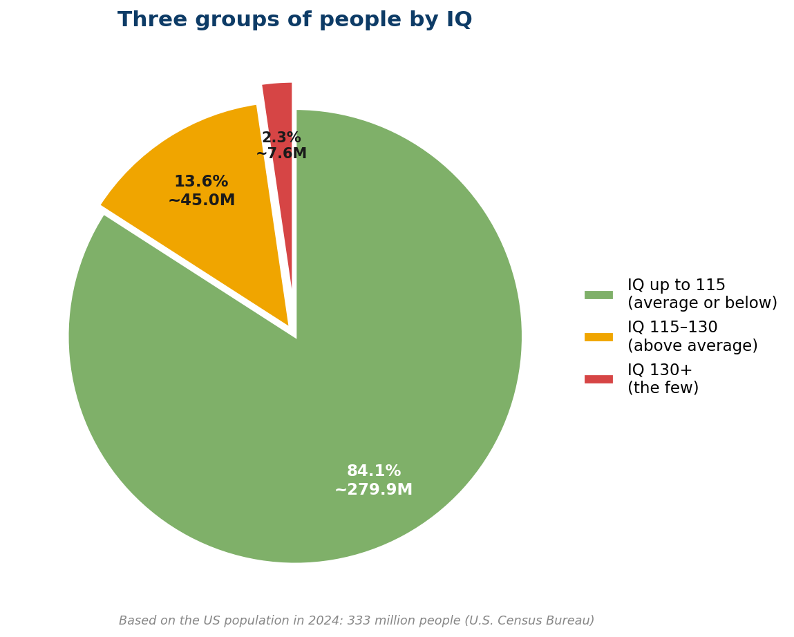

Почему мир устроен именно так
Почему мир устроен именно так, а не иначе
Мир предназначен для жизни не умных, а большинства. И как только ты это осознаешь, половина «нелогичных» вещей вокруг встаёт на свои места.

Ты наверняка часто ловил себя на мысли, что многие вещи в нашем мире устроены максимально нелогично и, по-хорошему, должны были бы работать совсем иначе. Почему законы такие тупые? Почему кассовые фильмы — незамысловатые, а шедевры проваливаются в прокате? Почему мошенничество «с безопасным счётом» до сих пор работает, хотя о нём трубят на каждом углу? Почему существует общество плоской Земли?
Я не буду разбирать ни один из этих вопросов по отдельности. Вместо этого я отвечу на один метавопрос, ответ на который безмолвно закрывает их все сразу.
Эффект интеллектуального анклава
Люди с высоким IQ обычно живут в окружении себе подобных. Круг общения — коллеги по инженерным и исследовательским профессиям, сокурсники с сильных факультетов, одноклассники из спецшкол, образованные родители и родственники. Средний IQ внутри такого круга сильно выше 100. И выбираются из него редко.
Такая замкнутость приводит к сильному искажению картины мира. Человек смотрит вокруг — и ему кажется, что все окружающие мыслят примерно так же, как он. Не в смысле политических взглядов, а в смысле уровня аргументации и логического мышления. Это иллюзия. И довольно опасная.
Немного неприятной статистики
Здесь важно сразу убрать одно частое заблуждение. Цифра 100 — это не жёсткая граница и не «эталон нормы». Это просто искусственно заданная точка отсчёта: результаты теста подгоняют так, чтобы средний балл в выборке оказался равен 100. То есть 100 — не свойство человека, а точка, вычисленная из того, как отвечают все остальные.
Из-за этого 100 постоянно «плавает». Тесты периодически перенормируют, и то, что вчера давало 100 баллов, завтра может давать 95 или 105 — потому что изменилась сама выборка, относительно которой считают. Знаменитый эффект Флинна — рост средних результатов от поколения к поколению — как раз про это: чтобы среднее снова стало равно 100, планку приходится поднимать. Так что воспринимать 100 как некую объективную «середину человечества» неверно. Это подвижный ориентир, а не константа.

Вот это и есть главная мысль: «100» — величина относительная. Средний человек середины XX века был абсолютной нормой своего времени, но по сегодняшней шкале он «не дотягивает» — не потому что был глупее, а потому что планку с тех пор подняли. И рост этот не вечен: с 1990–2000-х в ряде развитых стран тенденция развернулась, и норма поползла обратно. Всё это лишний раз доказывает: 100 — это не про людей, а про то, где в данный момент решили провести черту.
Но одно свойство от этого никуда не девается. Как бы ни сдвигали шкалу, распределение остаётся нормальным (гауссовым), а значит работает простой математический факт: половина значений всегда меньше среднего. Из него следует другой, эквивалентный первому, но сформулированный жёстче: половина людей всегда будет ниже медианы по способностям. Согласиться с этим психологически некомфортно — но это ровно то же самое утверждение, просто другими словами.
Посмотри внимательно на график. Почти 16% популяции имеет IQ ниже 85, а около 25% — ниже 90. И чтобы понимать реальность, важно понимать, что это вообще значит на практике.
Если сгруппировать всё население в три большие категории, масштаб становится нагляднее:

Больше восьми человек из десяти находятся в группе «до 115» — это те, для кого и проектируется массовый мир. Группа «130 и выше», то самое интеллектуальное меньшинство, — это всего 2,3% населения, около 7,6 млн человек на всю страну.
Что значит «ниже среднего» на самом деле
Дело не в лени и не в нежелании. Это реальные когнитивные ограничения. Чем ниже уровень способностей, тем труднее даются некоторые виды мышления — и вот на что это влияет:
Понимание обобщений. Трудно уловить разницу между обобщением и абсолютным утверждением. Скажи «в среднем азиаты ниже европейцев» — и в ответ услышишь «но я знаю одного высокого азиата». Человек просто не понимает абстракции «статистическое среднее».
Гипотетические ситуации. Сложно мысленно представить то, чего не было. «Как бы ты чувствовал себя вечером, если бы сегодня пропустил завтрак?» — «Почему ты говоришь, что я не завтракал? Я же завтракал». И так по кругу.
Соответствия и отображения. Чтение карт, схем, расписаний — это отображение одного на другое. У людей с IQ ниже 90 с этим постоянные трудности, а ниже 85 — проблемы даже с базовой грамотностью, ведь чтение это тоже отображение: букв в звуки.
Абстракции. Функция y = x² + 3x + 2 для многих — просто набор бессмысленных символов. Идея переменной, которую можно подставлять и получать разные результаты, оказывается непреодолимой.
Последовательность событий и рекурсия. Сложно удержать в голове порядок шагов и причинно-следственные связи. А рекурсивное мышление («история внутри истории») ломает даже людей со средним интеллектом.
Почему мир устроен так, а не иначе
Теперь, когда картинка сложилась, всё встаёт на места. Мир проектируется и работает для всего распределения населения, а не только для интеллектуального меньшинства. Поэтому:
Реклама рассчитана не на тех, кто анализирует, а на тех, кто реагирует на простые образы. Интерфейсы делают максимально примитивными, потому что пользователей с низким IQ больше. Инструкции и предупреждения повторяют по многу раз, потому что значительная часть людей не улавливает их с первого раза. Законы пишут максимально буквально, чтобы избежать «чтения между строк». А мошеннические схемы продолжают работать, потому что на них всегда находится достаточно жертв.
Когда мы смотрим на государственное управление, законы, работу полиции, маркетинг, рекламу или кинематограф — нужно понимать, что всё это устроено с расчётом работать в том числе (а иногда и в основном) с частью популяции, находящейся далеко слева от середины графика IQ.
То, что кажется тебе абсурдом, чаще всего оказывается разумным компромиссом, если посмотреть на реальный состав аудитории. Раздражение уходит, когда перестаёшь требовать от мира соответствия своей картинке и начинаешь видеть тот расклад, под который он реально настроен. Это не повод смотреть на кого-то свысока — это способ перестать биться головой о стену и начать работать с реальностью такой, какая она есть.